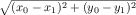

VI Аккумуляторы
Когда вы просите ISL+ применить некоторую функцию f к аргументу a, вы обычно получаете некоторое значение v. Если вы снова вычислите (f a), вы снова получите v. Фактически, вы получите v независимо от того, как часто вы запрашиваете вычисление (f a). Применение функции также может зацикливаться или сигнализировать об ошибке, но мы игнорируем эти возможности. Мы также игнорируем random, что является истинным исключением из этого правила. Не имеет значения, применяется ли функция впервые или в сотый раз, находится ли приложение в области взаимодействия DrRacket или внутри самой функции. Функция работает в соответствии с её предназначением, и это все, что вам нужно знать.
Этот принцип независимости от контекста играет решающую роль в разработке рекурсивных функций. Когда дело доходит до разработки, вы можете предположить, что функция вычисляет то, что обещает предназначение, даже если функция еще не определена. В частности, вы можете использовать результаты рекурсивных вызовов для создания кода некоторой функции, обычно в одном из ее условий cond. Эта идея основана на этапах шаблонов и кодирования рецептов проектирования как для структурных, так и для генеративно-рекурсивных функций.
Несмотря на то, что независимость от контекста облегчает проектирование функций, она вызывает две проблемы. В общем, независимость от контекста вызывает потерю знаний во время рекурсивного вычисления; функция не «знает», вызывается ли она в полном списке или в части этого списка. Для структурно рекурсивных программ эта потеря знаний означает, что им, возможно, придется проходить данные более одного раза, что снижает производительность. Для функций, использующих генеративную рекурсию, потеря означает, что функция может вообще не вычислить результат. Предыдущая часть иллюстрирует эту вторую проблему с функцией обхода графа, которая не может найти путь между двумя узлами для кругового графа.
В этой части представлен вариант рецептов проектирования для решения этой проблемы «потери контекста». Поскольку мы хотим сохранить принцип, согласно которому (f a) возвращает один и тот же результат независимо от того, как часто и где она вычисляется, единственным решением является добавление аргумента, представляющего контекст вызова функции. Мы называем этот дополнительный аргумент accumulator(аккумулятором). Во время обхода данных рекурсивные вызовы продолжают получать обычные аргументы, в то время как аккумуляторы меняются в зависимости от них и контекста.
Правильное проектирование функций с аккумуляторами явно более сложно, чем любой из подходов к проектированию из предыдущих глав. Ключ в том, чтобы понять взаимосвязь между правильными аргументами и аккумуляторами. В следующих главах объясняется, как создавать функции с аккумуляторами и как они работают.
31 Утрата знаний
Обе функции, разработанные по структурным рецептам, и генеративному, страдают от потери знаний, хотя и по-разному. В этой главе на двух примерах - по одному из каждой категории - объясняется, как отсутствие контекстных знаний влияет на выполнение функций. В то время как первый раздел посвящен структурной рекурсии, второй касается вопросов, связанных с генеративной сферой.
31.1 Проблема со структурной обработкой
Начнем с, казалось бы, простого примера:
Пример задачи Вы работаете в команде геометров, которая будет измерять длину участков дороги. Команда попросила вас разработать программу, которая переводит эти относительные расстояния между сериями точек дороги в абсолютные расстояния от некоторой начальной точки.
Разработка программы, которая выполняет этот расчет, является простым упражнением в проектировании структурных функций. Рисунок 177 содержит полную программу. Если данный список не равен '(), естественная рекурсия вычисляет абсолютное расстояние от остатка точек до первой точки (rest l). Поскольку первое не является фактическим источником и имеет расстояние (first l) до начала координат, мы должны добавить (first l) к каждому числу в результате естественной рекурсии. Этот второй шаг - добавление числа к каждому элементу списка чисел - требует вспомогательной функции. .
; [List-of Number] -> [List-of Number] ; converts a list of relative to absolute distances ; the first number represents the distance to the origin (check-expect (relative->absolute '(50 40 70 30 30)) '(50 90 160 190 220)) (define (relative->absolute l) (cond [(empty? l) '()] [else (local ((define rest-of-l (relative->absolute (rest l))) (define adjusted (add-to-each (first l) rest-of-l))) (cons (first l) adjusted))])) ; Number [List-of Number] -> [List-of Number] ; adds n to each number on l (check-expect (cons 50 (add-to-each 50 '(40 110 140 170))) '(50 90 160 190 220)) (define (add-to-each n l) (cond [(empty? l) '()] [else (cons (+ (first l) n) (add-to-each n (rest l)))])) Рисунок 177: Преобразование относительных расстояний в абсолютные расстояния
(relative->absolute (build-list size add1))
size
1000
2000
3000
4000
5000
6000
7000
time
25
109
234
429
689
978
1365
Упражнение 489. Переформулируйте add-to-each используя map и lambda.
(relative->absolute (build-list size add1))
Учитывая простоту проблемы, объем работы, которую выполняет программа, вызывает удивление. Если бы мы преобразовали тот же список вручную, мы бы подсчитали общее расстояние и просто добавили бы его к относительным расстояниям по мере того, как мы делаем шаги по линии. Почему программа не может этого сделать?
(define (relative->absolute/a l) (cond [(empty? l) ...] [else (... (first l) ... ... (relative->absolute/a (rest l)) ...)]))
(relative->absolute/a (list 3 2 7)) == (cons ... 3 ... (relative->absolute/a (list 2 7))) == (cons ... 3 ... (cons ... 2 ... (relative->absolute/a (list 7)))) == (cons ... 3 ... (cons ... 2 ... (cons ... 7 ... (relative->absolute/a '()))))
Опять же, проблема в том, что рекурсивные функции не зависят от своего контекста. Функция обрабатывает L в (cons N L) так же, как в (cons K L). Действительно, если бы задано L само по себе, он также обработал бы список таким же образом.
Чтобы компенсировать потерю «знаний», мы снабжаем функцию дополнительным параметром: accu-dist. Последнее представляет собой накопленное расстояние, которое мы сохраняем при преобразовании списка относительных расстояний в список абсолютных расстояний. Его начальное значение должно быть 0. По мере того, как функция просматривает список, она должна добавлять свои числа в tally(счет).
(define (relative->absolute/a l accu-dist) (cond [(empty? l) '()] [else (local ((define tally (+ (first l) accu-dist))) (cons tally (relative->absolute/a (rest l) tally)))]))
(relative->absolute/a (list 3 2 7)) == (relative->absolute/a (list 3 2 7) 0) == (cons 3 (relative->absolute/a (list 2 7) 3)) == (cons 3 (cons 5 (relative->absolute/a (list 7) 5))) == (cons 3 (cons 5 (cons 12 ???))) == (cons 3 (cons 5 (cons 12 '())))
Ручное вычисление показывает, насколько использование аккумулятора упрощает процесс преобразования. Каждый элемент в списке обрабатывается один раз. Когда relative->absolute/aдостигает конца списка аргументов, результат полностью определяется, и дальнейшая работа не требуется. В общем, функция выполняет порядка N шагов естественной рекурсии для списка с N элементами.
Одна из проблем заключается в том, что, в отличие от relative->absolute, новая функция потребляет два аргумента, а не только один. Хуже того, кто-то может случайно неправильно использовать relative->absolute/a, применив его к списку чисел и к числу, которое не равно 0. Мы можем решить обе проблемы с помощью определения функции, которая использует определение local (локальное) для инкапсуляции relative->absolute/a; Рисунок 178 показывает результат. Теперь relative->absolute неотличимо от relative->absolute.v2 в отношении ввода-вывода.
; [List-of Number] -> [List-of Number] ; converts a list of relative to absolute distances ; the first number represents the distance to the origin (check-expect (relative->absolute.v2 '(50 40 70 30 30)) '(50 90 160 190 220)) (define (relative->absolute.v2 l0) (local ( ; [List-of Number] Number -> [List-of Number] (define (relative->absolute/a l accu-dist) (cond [(empty? l) '()] [else (local ((define accu (+ (first l) accu-dist))) (cons accu (relative->absolute/a (rest l) accu)))]))) (relative->absolute/a l0 0))) Рисунок 178: Преобразование относительных расстояний с помощью аккумулятора
(relative->absolute.v2 (build-list size add1))
size
1000
2000
3000
4000
5000
6000
7000
time
0
0
0
0
0
1
1
(define (relative->absolute l) (reverse (foldr (lambda (f l) (cons (+ f (first l)) l)) (list (first l)) (reverse (rest l)))))
Означает ли решение вашего друга, что в этом мотивационном разделе нет необходимости в нашей сложной разработке? Чтобы получить ответ, см. Распознавание необходимости в аккумуляторе, но сначала подумайте над вопросом. Подсказка Попробуйте разработать reverse самостоятельно.
31.2 Проблема с генеративной рекурсией
Пример Задачи Разработайте алгоритм, который проверяет, соединены ли два узла в simple graph (простом графе). В таком графе каждый узел имеет ровно одно направленное соединение с другим и, возможно, с самим собой.
Рассмотрим пример графа на рисунке 179. Имеется шесть узлов, от A до F, и шесть соединений. Путь от A к E должен содержать B и C. Однако нет пути от A до F или от любого другого узла, кроме него самого.
(define a-sg '((A B) (B C) (C E) (D E) (E B) (F F))) Рисунок 179: Простой граф
; A SimpleGraph is a [List-of Connection] ; A Connection is a list of two items: ; (list Node Node) ; A Node is a Symbol.
; Node Node SimpleGraph -> Boolean ; is there a path from origin to destination ; in the simple graph sg (check-expect (path-exists? 'A 'E a-sg) #true) (check-expect (path-exists? 'A 'F a-sg) #false) (define (path-exists? origin destination sg) #false)
-
Проблема тривиальна, если исходный(origin) пункт совпадает с пунктом назначения(origin).
-
Тривиальное решение это #true.
-
Если исходный(origin) пункт не совпадает с пунктом назначения(destination), мы можем сделать только одно: перейти к ближайшему соседу и найти оттуда пункт назначения(destination).
-
Не нужно ничего делать, если мы найдем решение новой проблемы. Если сосед исходного(origin) пункта связан с пунктом назначения(destination), то он также является исходным(origin). Иначе связи нет.
; Node Node SimpleGraph -> Boolean ; is there a path from origin to destination in sg (check-expect (path-exists? 'A 'E a-sg) #true) (check-expect (path-exists? 'A 'F a-sg) #false) (define (path-exists? origin destination sg) (cond [(symbol=? origin destination) #t] [else (path-exists? (neighbor origin sg) destination sg)])) ; Node SimpleGraph -> Node ; determine the node that is connected to a-node in sg (check-expect (neighbor 'A a-sg) 'B) (check-error (neighbor 'G a-sg) "neighbor: not a node") (define (neighbor a-node sg) (cond [(empty? sg) (error "neighbor: not a node")] [else (if (symbol=? (first (first sg)) a-node) (second (first sg)) (neighbor a-node (rest sg)))])) Рисунок 180: Поиск пути в простом графе
На рисунке 180 представлена полная программа, включая функцию поиска соседа узла в простом графе - простое упражнение по структурной рекурсии - и тестовые примеры для обоих возможных результатов. Однако не запускайте программу. Если вы это сделаете, будьте готовы с помощью мыши остановить запущенную программу. Действительно, даже поверхностный взгляд на функцию наводит на мысль, что у нас есть проблема. Хотя функция должна выдавать #false, если нет пути от источника(origin) к месту назначения (destination), программа нигде не содержит #false. И наоборот, нам нужно спросить, что на самом деле делает функция, когда между двумя узлами нет пути.
(path-exists? 'C 'D '((A B) (F F)))
== (path-exists? 'E 'D '((A B) (F F))) == (path-exists? 'B 'D '((A B) (F F)))
== (path-exists? 'C 'D '((A B) (F F)))
Наша проблема с path-exists? это снова потеря «знания», подобная той, что говорилось выше о relative->absolute. Подобно relative->absolute, конструкция path-exists? использует рецепт и предполагает, что рекурсивные вызовы не зависят от их контекста. В случае path-exists? это означает, в частности, что функция не «знает», получило ли предыдущее приложение в текущей цепочке рекурсий те же самые аргументы.
Решение этой проблемы проектирования следует шаблону предыдущего раздела. Мы добавляем параметр, который мы называем seen(осмотренные) и который представляет накопленный список начальных узлов, с которыми функция столкнулась, начиная с исходного применения. Его начальное значение должно быть '(). Когда функция проверяет конкретный исходный узел(origin) и перемещается к его соседям(neighbors), исходный узел добавляется к seen(осмотренным).
; Node Node SimpleGraph [List-of Node] -> Boolean ; is there a path from origin to destination ; assume there are no paths for the nodes in seen (define (path-exists?/a origin destination sg seen) (cond [(symbol=? origin destination) #true] [else (path-exists?/a (neighbor origin sg) destination sg (cons origin seen))]))
(path-exists?/a 'C 'D '((A B)
(F F)) '())
== (path-exists?/a 'E 'D '((A B) (F F)) '(C))
== (path-exists?/a 'B 'D '((A B) (F F)) '(E C))
== (path-exists?/a 'C 'D '((A B) (F F)) '(B E C))
Все, что нам нужно сделать сейчас, это заставить алгоритм использовать накопленные знания. В частности, алгоритм может определить, является ли данный источник (origin) уже просмотренным элементом(т.е находится в seen). Если это так, проблема также тривиально разрешима, что дает #false в качестве решения. Рисунок 181 содержит определение path-exists.v2?, Которая является версией path-exists?. Определение ссылается на функцию ISL+ member?.
; Node Node SimpleGraph -> Boolean ; is there a path from origin to destination in sg (check-expect (path-exists.v2? 'A 'E a-sg) #true) (check-expect (path-exists.v2? 'A 'F a-sg) #false) (define (path-exists.v2? origin destination sg) (local (; Node Node SimpleGraph [List-of Node] -> Boolean (define (path-exists?/a origin seen) (cond [(symbol=? origin destination) #t] [(member? origin seen) #f] [else (path-exists?/a (neighbor origin sg) (cons origin seen))]))) (path-exists?/a origin '()))) Рисунок 181: Поиск пути с аккумулятором на простом графе
Определение path-exists.v2? также устраняет две незначительные проблемы с первой версией. Локализуя определение аккумулирующей функции, мы можем гарантировать, что первый вызов всегда использует '() в качестве начального значения для параметра seen. А path-exists.v2? удовлетворяет той же сигнатуре и предназначению, что и функция path-exists?.
Тем не менее, есть ли существенная разница между path-exists.v2? и relative-to-absolute2. В то время как последняя была эквивалентна исходной функции path-exists.v2? улучшается на path-exists?. Хотя последняя не может найти ответ на некоторые входные данные, path-exists.v2? находит решение для любого простого графа.
Упражнение 492. Измените определения на рисунке 169 так, чтобы программа выдавала #false, даже если она дважды встречает одну и ту же начальную (origin) точку.
32 Разработка функций в аккумулирующем стиле
Предыдущая глава иллюстрирует необходимость накопления дополнительных знаний двумя примерами. В одном случае накопление упрощает понимание функции и дает результат, который намного быстрее, чем исходная версия. В другом случае для правильной работы функции необходимо аккумулирование(накопление). Однако в обоих случаях необходимость аккумулирования/накопления становится очевидной только после того, как существует правильно спроектированная функция.
-
признание того, что функция извлекает выгоду из использования аккумулятора; а также
-
понимание того, что представляет собой аккумулятор.
; [List-of X] -> [List-of X] ; constructs the reverse of alox (check-expect (invert '(a b c)) '(c b a)) (define (invert alox) (cond [(empty? alox) '()] [else (add-as-last (first alox) (invert (rest alox)))])) ; X [List-of X] -> [List-of X] ; adds an-x to the end of alox (check-expect (add-as-last 'a '(c b)) '(c b a)) (define (add-as-last an-x alox) (cond [(empty? alox) (list an-x)] [else (cons (first alox) (add-as-last an-x (rest alox)))])) Рисунок 182: Разработка с аккумуляторами, пример конструкции
32.1 Распознавание необходимости в аккумуляторе
-
Если структурно рекурсивная функция пересекает результат своей естественной рекурсии с помощью вспомогательной рекурсивной функции, рассмотрите возможность использования параметра аккумулятора.
Взгляните на определение invert на рисунке 182. Результатом рекурсивного применения является перевернутый остаток списка. Она использует add-as-last для добавления первого элемента в этот перевернутый список и, таким образом, создает перевернутую сторону всего списка. Эта вторая вспомогательная функция также является рекурсивной. Таким образом, мы определили кандидата на использование аккумулятора.
Пришло время изучить некоторые ручные вычисления, как в Проблема со структурной обработкой, чтобы увидеть, помогает ли аккумулятор. Учтите следующее:(invert '(a b c)) == (add-as-last 'a (invert '(b c))) == (add-as-last 'a (add-as-last 'b (invert '(c)))) == ... == (add-as-last 'a (add-as-last 'b '(c))) == (add-as-last 'a '(c b)) == '(c b a) Стоп! Замените точки двумя недостающими шагами. Затем вы можете видеть, что invert в конечном итоге достигает конца данного списка - точно так же, как add-as-last - и если бы он знал, какие элементы туда помещать, не было бы необходимости во вспомогательной функции. -
Если мы имеем дело с функцией, основанной на генеративной рекурсии, перед нами стоит гораздо более сложная задача. Наша цель должна заключаться в том, чтобы понять, может ли алгоритм не выдать результат для входных данных, для которых мы ожидаем результат. В таком случае может помочь добавление параметра, который накапливает знания. Поскольку эти ситуации сложны, мы переносим обсуждение примера в Другие способы использования аккумулирования/накопления..
Упражнение 493. Утверждают, что в терминологии Intermezzo 4: The Nature of Numbers, invert занимает O(n2) времени, когда данный список состоит из n элементов.
Упражнение 494. Нужен ли аккумулятор для функции sort> из AВспомогательных функций, которые повторяются? Если да, то почему? Если нет, то почему?
32.2 Добавление аккумуляторов
-
Определите знания, которые представляет аккумулятор, какие данные использовать и как эти знания приобретаются в виде данных.
Например, для преобразования относительных расстояний в абсолютные расстояния достаточно накопить общее расстояние, обнаруженное на данный момент. Поскольку функция обрабатывает список относительных расстояний, она добавляет каждое новое найденное относительное расстояние к текущему значению аккумулятора. Для задачи маршрутизации аккумулятор запоминает каждый обнаруженный узел. По мере того, как функция проверки пути (path-checking) проходит по графу, она присоединяет(путем conses) каждый новый узел к аккумулятору.
В общем, вам нужно действовать следующим образом.-
; Domain -> Range (define (function d0) (local (; Domain AccuDomain -> Range ; accumulator ... (define (function/a d a) ...)) (function/a d0 a0))) Сделайте набросок ручного вычисления применения функции(function), чтобы понять природу аккумулятора. -
Определите, какие данные отслеживает аккумулятор.
Напишите утверждение, которое объясняет аккумулятор как связь между аргументом d вспомогательной аккумулирующей функции function/a и исходным аргументом d0.
Примечание Отношение остается постоянным, также называемым инвариантным, в ходе вычисления. Из-за этого свойства утверждение аккумулятора часто называют invariant(инвариантом).
-
Используйте инвариант, чтобы определить начальное значение a0 для a.
-
Также используйте инвариант, чтобы определить, как вычислить аккумулятор для рекурсивных вызовов функции в пределах определения function/a.
-
-
Используйте знания аккумулятора для разработки function/a (аккумулирующей функции).
Для структурно рекурсивной функции значение аккумулятора обычно используется в базовом случае, то есть в предложении cond, которое не является продолжением рекурсивных вызовов(не повторяется). Для функций, которые используют генеративно-рекурсивные функции, накопленные знания могут использоваться в существующем базовом случае, в новом базовом случае или в предложениях cond, которые имеют дело с генеративной рекурсией.
(define (invert.v2 alox0) (local (; [List-of X] ??? -> [List-of X] ; constructs the reverse of alox ; accumulator ... (define (invert/a alox a) (cond [(empty? alox) ...] [else (invert/a (rest alox) ... a ...)]))) (invert/a alox0 ...)))
(invert '(a b c))
== (invert/a '(a b c) a0) == (invert/a '(b c) ... 'a ... a0) == (invert/a '(c) ... 'b ... 'a ... a0) == (invert/a '() ... 'c ... 'b ... 'a ... a0)
(define (invert.v2 alox0) (local (; [List-of X] [List-of X] -> [List-of X] ; constructs the reverse of alox ; accumulator a is the list of all those ; items on alox0 that precede alox ; in reverse order (define (invert/a alox a) (cond [(empty? alox) a] [else (invert/a (rest alox) (cons (first alox) a))]))) (invert/a alox0 '())))
Обратите внимание на то, что invert.v2 еще раз просто перемещается по списку. Напротив, invert повторно обрабатывает каждый результат своей естественной рекурсии с помощью add-as-last. Стоп! Измерьте, насколько быстрее работает invert.v2, чем invert.
Терминология Программисты используют фразу accumulator-style function(аккумулирующая функция) для обсуждения функций, использующих параметр аккумулятора. Примеры функций разработанных в аккумулирующем стиле: relative->absolute/a, invert/a и path-exists?/a.
32.3 Преобразование функций в аккумулирующий стиль
Составить аккумулирующее утверждение сложно, но без формулировки хорошего инварианта невозможно понять функцию аккумулирующего стиля. Поскольку цель программиста - убедиться, что все, кто следит за ним, легко понимают код, практика этого навыка имеет решающее значение. А формулирование инвариантов заслуживает большой практики.
Цель этого раздела - изучить формулировку утверждений аккумуляторов с помощью трех тематических исследований: функции суммирования, функции факториала и функции обхода дерева. Каждый такой случай связан с преобразованием структурно-рекурсивной функции в аккумуляторный стиль. Фактически ни один из них не требует использования параметра аккумулятора. Но их легко понять, и, устранив все другие отвлекающие факторы, использование таких примеров позволяет нам сосредоточиться на артикуляции инварианта аккумулятора.
(define (sum.v2 alon0) (local (; [List-of Number] ??? -> Number ; computes the sum of the numbers on alon ; accumulator ... (define (sum/a alon a) (cond [(empty? alon) ...] [else (... (sum/a (rest alon) ... ... a ...) ...)]))) (sum/a alon0 ...)))
Как было предложено нашим первым шагом, мы поместили шаблон для sum/a в определение local, добавили параметр аккумулятора и переименовали параметр sum .
(sum.v1 '(10 4)) == (+ 10 (sum.v1 '(4))) == (+ 10 (+ 4 (sum.v1 '()))) == (+ 10 (+ 4 (+ 0))) ... == 14
(sum.v2 '(10 4)) == (sum/a '(10 4) a0) == (sum/a '(4) ... 10 ... a0) == (sum/a '() ... 4 ... 10 ... a0) ... == 14 Рисунок 183: Расчет с использованием шаблонов в аккумулирующем стиле
a сумма чисел, которых не хватает alon из alon0
if
alon0
is
'(10 4 6)
'(10 4 6)
'(10 4 6)
and
alon
is
'(4 6)
'(6)
'()
then
a
should be
10
14
20
(define (sum.v2 alon0) (local (; [List-of Number] Number -> Number ; computes the sum of the numbers on alon ; accumulator a is the sum of the numbers ; that alon lacks from alon0 (define (sum/a alon a) (cond [(empty? alon) a] [else (sum/a (rest alon) (+ (first alon) a))]))) (sum/a alon0 0)))
Упражнение 495. Завершите ручное вычисление (sum/a '(10 4) 0) на рисунке 183. Оно показывает, что sum и sum.v2 складывают указанные числа в обратном порядке. В то время как sum складывает числа справа налево, версия в аккумулирующем стиле складывает их слева направо.
Примечание относительно чисел Помните, что для точных чисел эта разница не влияет на окончательный результат. Для неточных чисел разница может быть значительной. См. Упражнения в конце Интермеццо 5: Стоимость вычислений.
; N -> N ; computes (* n (- n 1) (- n 2) ... 1) (check-expect (!.v1 3) 6) Факториальная функция полезна для анализа алгоритмов. (define (!.v1 n) (cond [(zero? n) 1] [else (* n (!.v1 (sub1 n)))]))
(define (!.v2 n0) (local (; N ??? -> N ; computes (* n (- n 1) (- n 2) ... 1) ; accumulator ... (define (!/a n a) (cond [(zero? n) ...] [else (... (!/a (sub1 n) ... a ...) ...)]))) (!/a n0 ...)))
(!.v1 3) == (* 3 (!.v1 2)) == (* 3 (* 2 (!.v1 1))) ... == 6
(!.v2 3) == (!/a 3 a0) == (!/a 2 ... 3 ... a0) ... == 6
a произведение натуральных чисел в интервале [n0,n).
Упражнение 496. Каким должно быть значение a, когда n0 равно 10, а n равно 8?
(define (!.v2 n0) (local (; N N -> N ; computes (* n (- n 1) (- n 2) ... 1) ; accumulator a is the product of the ; natural numbers in the interval [n0,n) (define (!/a n a) (cond [(zero? n) a] [else (!/a (sub1 n) (* n a))]))) (!/a n0 1)))
Упражнение 497. Как и sum, !.v1 выполняет простые вычисления, в данном случае умножение, в обратном порядке. Удивительно, но это отрицательно сказывается на производительности функции.
Измерьте, сколько времени потребуется, чтобы вычислить (!.v1 20) 1,000 раз. Напомним, что функция (time an-expression) определяет, сколько времени потребуется для выполнения выражения an-expression.
В третьем и последнем примере мы используем функцию, которая измеряет высоту упрощаемых бинарных деревьев. Пример показывает, что программирование в аккумулирующем стиле применимо ко всем типам данных, а не только к тем, которые определены с помощью одиночных ссылок на себя. Действительно, оно так же часто используется для сложных определений данных, как и для списков и натуральных чисел.
(define-struct node [left right]) ; A Tree is one of: ; – '() ; – (make-node Tree Tree) (define example (make-node (make-node '() (make-node '() '())) '()))
(define (height abt) (cond [(empty? abt) 0] [else (+ (max (height (node-left abt)) (height (node-right abt))) 1)]))
'()
(make-node '() '())
(make-node (make-node '() (make-node '() '())) '()) Рисунок 184: Некоторые урезанные бинарные деревья
(define (height.v2 abt0) (local (; Tree ??? -> N ; measures the height of abt ; accumulator ... (define (height/a abt a) (cond [(empty? abt) ...] [else (... (height/a (node-left abt) ... a ...) ... ... (height/a (node-right abt) ... a ...) ...)]))) (height/a abt0 ...)))
a количество шагов, необходимых для достижения abt из abt0.
-
Если abt0 - это полное дерево, а abt - это поддерево, на которое указывает цифра 1 в кружке, значение аккумулятора должно быть 1, потому что для перехода от корня abt к корню abt0 требуется ровно один шаг.
-
В том же духе для поддерева с меткой 2 аккумулятор равен 2, потому что требуется два шага, чтобы добраться до этого места.
(define (height.v2 abt0) (local (; Tree N -> N ; measures the height of abt ; accumulator a is the number of steps ; it takes to reach abt from abt0 (define (height/a abt a) (cond [(empty? abt) a] [else (... (height/a (node-left abt) (+ a 1)) ... ... (height/a (node-right abt) (+ a 1)) ...)]))) (height/a abt0 0)))
; Tree -> N ; measures the height of abt0 (check-expect (height.v2 example) 3) (define (height.v2 abt0) (local (; Tree N -> N ; measures the height of abt ; accumulator a is the number of steps ; it takes to reach abt from abt0 (define (height/a abt a) (cond [(empty? abt) a] [else (max (height/a (node-left abt) (+ a 1)) (height/a (node-right abt) (+ a 1)))]))) (height/a abt0 0)))
Следование рецепту разработки также говорит нам, что нам нужно интерпретировать два значения, чтобы найти подходящую функцию. Согласно предназначению для height/a, первое значение - это высота левого поддерева, а второе - высота правого. Учитывая, что нас интересует высота самого abt и что высота - это наибольшее количество шагов, необходимых для достижения листа, мы используем функцию max, чтобы выбрать правильный; см. рисунок 185 для полного определения.
Первый аккумулятор представляет собой количество шагов, необходимых для достижения abt от (корня) abt0. Второй - высота той части в abt0, которая находится строго слева от abt.
... ; Tree N N -> N ; measures the height of abt ; accumulator s is the number of steps ; it takes to reach abt from abt0 ; accumulator m is the maximal height of ; the part of abt0 that is to the left of abt (define (h/a abt s m) (cond [(empty? abt) ...] [else (... (h/a (node-left abt) ... s ... ... m ...) ... ... (h/a (node-right abt) ... s ... ... m ...) ...)])) ...
Упражнение 498. Полная height.v3. Подсказка Самое нижнее дерево на рис. 184 не содержит поддерева слева от поддерева, отмеченного цифрой 1. Оно содержит один полный путь от корня к дереву в той части дерева, которая находится слева от поддерева, отмеченного цифрой 2; этот путь состоит из двух шагов.
Эта вторая конструкция имеет более сложный инвариант аккумулятора, чем первая. Подразумевается, что его реализация требует большей осторожности, чем первая. В то же время у него нет очевидных преимуществ.
Наша точка зрения состоит в том, что разные инварианты аккумуляторов дают разные варианты. Вы можете разработать оба варианта систематически, следуя одному и тому же рецепту разработки. Когда у вас есть полные определения функций, вы можете сравнивать и сравнивать результаты, а затем решать, какое из них оставить, основываясь на доказательствах. Конец
Упражнение 499. Разработайте аккумулирующую версию product, функцию, которая вычисляет произведение списка чисел. Остановитесь, когда вы сформулировали инварианта аккумулятора, и попросите кого-нибудь его проверить.
Производительность product равна O(n), где n - длина списка. Версия с аккумулятором улучшает её?
Упражнение 500. Разработайте аккумулирующую версию how-many, которая представляет собой функцию, определяющую количество элементов в списке. Остановитесь, когда вы сформулировали инвариант, и попросите кого-нибудь его проверить.
Производительность how-many равна O(n), где n - длина списка. Версия с аккумулятором улучшает её?
Когда вы вручную вычисляете (how-many some-non-empty-list), n применения add1 ожидают обработки к тому моменту, когда функция достигает '(), где n - количество элементов в списке. Специалисты по информатике иногда говорят, что how-many нужно O(n) пространства для Специалисты по информатике называют это пространство пространством стека, но пока вы можете спокойно игнорировать эту терминологию. представления этих ожидающих функциональных применений. Уменьшает ли аккумулятор пространство, необходимое для вычисления результата?
; N -> Number ; adds n to pi without using + (check-within (add-to-pi 2) (+ 2 pi) 0.001) (define (add-to-pi n) (cond [(zero? n) pi] [else (add1 (add-to-pi (sub1 n)))]))
Упражнение 502. Разработайте функции palindrome, который принимает непустой список и создает палиндром, зеркально отображая список вокруг последнего элемента. Когда дано (explode "abc"), оно выдаст (explode "abcba").
; [NEList-of 1String] -> [NEList-of 1String] ; creates a palindrome from s0 (check-expect (mirror (explode "abc")) (explode "abcba")) (define (mirror s0) (append (all-but-last s0) (list (last s0)) (reverse (all-but-last s0))))
-
через all-but-last,
-
через last,
-
снова через all-but-last и
-
через reverse, который является версией invert в ISL+.
; Matrix -> Matrix ; finds a row that doesn't start with 0 and ; uses it as the first one ; generative moves the first row to last place ; no termination if all rows start with 0 (check-expect (rotate '((0 4 5) (1 2 3))) '((1 2 3) (0 4 5))) (define (rotate M) (cond [(not (= (first (first M)) 0)) M] [else (rotate (append (rest M) (list (first M))))]))
rows in M
1000
2000
3000
4000
5000
17
66
151
272
436
(define (rotate.v2 M0) (local (; Matrix ... -> Matrix ; accumulator ... (define (rotate/a M seen) (cond [(empty? (rest M)) ...] ; Can this be simplified to (empty? M) [else (... (rotate/a (rest M) ... seen ...) ...)]))) (rotate/a M0 ...)))
Сформулируйте утверждение об аккумуляторе. Затем следуйте рецепту разработки аккумулятора, чтобы выполнить вышеуказанную функцию. Измерьте, насколько быстро он работает в Matrix, состоящей из строк с ведущими 0, за исключением последней. Если вы правильно выполнили разработки, функция работает довольно быстро.
Упражнение 504. Разработайте to10. Она потребляет список цифр и производит соответствующее число. Первый элемент в списке - это самая значимая цифра. Следовательно, при применении к '(1 0 2) она выдаёт 102.
Знание предметной области Вы, возможно, помните из начальной школы, что результат определяется
Упражнение 505. Разработайте функцию is-prime, которая потребляет натуральное число и возвращает #true, если оно простое, и #false в противном случае.
Знание предметной области Число n является простым, если оно не делится на любое число от n - 1 до 2.
; N [>=1] -> Boolean ; determines whether n is a prime number (define (is-prime? n) (cond [(= n 1) ...] [else (... (is-prime? (sub1 n)) ...)]))
!.v1
5.760
5.780
5.800
5.820
5.870
5.806
!.v2
5.970
5.940
5.980
5.970
6.690
6.111
Упражнение 506. Создайте аккумуляторную версию map.
(check-expect (f*ldl + 0 '(1 2 3)) (foldl + 0 '(1 2 3))) (check-expect (f*ldl cons '() '(a b c)) (foldl cons '() '(a b c))) ; version 1 (define (f*ldl f e l) (foldr f e (reverse l)))
; version 2 (define (f*ldl f e l) (local ((define (reverse l) (cond [(empty? l) '()] [else (add-to-end (first l) (reverse (rest l)))])) (define (add-to-end x l) (cond [(empty? l) (list x)] [else (cons (first l) (add-to-end x (rest l)))])) (define (foldr l) (cond [(empty? l) e] [else (f (first l) (foldr (rest l)))]))) (foldr (reverse l))))
; version 3 (define (f*ldl f e l) (local ((define (invert/a l a) (cond [(empty? l) a] [else (invert/a (rest l) (cons (first l) a))])) (define (foldr l) (cond [(empty? l) e] [else (f (first l) (foldr (rest l)))]))) (foldr (invert/a l '()))))
; version 4 (define (f*ldl f e l0) (local ((define (fold/a a l) (cond [(empty? l) a] [else (fold/a (f (first l) a) (rest l))]))) (fold/a e l0)))
; [X Y] [X Y -> Y] Y [List-of X] -> Y
(check-expect (build-l*st n f) (build-list n f))
32.4 Графический редактор с мышью
Графический редактор вводит понятие однострочного редактора и представляет ряд упражнений по созданию графического редактора. Напомним, что графический редактор - это интерактивная программа, которая интерпретирует клавиатурные события как действия редактирования над строкой. В частности, когда пользователь нажимает клавиши со стрелками влево или вправо, курсор перемещается влево или вправо; аналогично нажатие клавиши удаления удаляет 1String из редактируемого текста. Программа-редактор использует представление данных, которое объединяет две строки в структуру. Графический Редактор, Повторение возобновляет эти упражнения и показывает, как одна и та же программа может извлечь большую пользу из другой структуры данных, объединяющей две строки.
Ни в одном из этих разделов не рассматриваются действия мыши для навигации, хотя все современные приложения поддерживают эту функцию. Основная трудность с событиями мыши состоит в том, чтобы поместить курсор в нужное место. Поскольку программа работает с одной строкой текста, щелчок мышью по (x,y) явно направлен на то, чтобы поместить курсор между буквами, которые видны в позиции x или рядом с ней. Этот раздел восполняет пробел.
Вспомните соответствующие определения из Графический редактор, Повторение:
(define FONT-SIZE 11) (define FONT-COLOR "black") ; [List-of 1String] -> Image ; renders a string as an image for the editor (define (editor-text s) (text (implode s) FONT-SIZE FONT-COLOR)) (define-struct editor [pre post]) ; An Editor is a structure: ; (make-editor [List-of 1String] [List-of 1String]) ; interpretation if (make-editor p s) is the state of ; an interactive editor, (reverse p) corresponds to ; the text to the left of the cursor and s to the ; text on the right
(make-editor p s)
(string=? (string-append p s) ed)
(<= (image-width (editor-text p)) x (image-width (editor-text (append p (first s)))))
Подсказки (1) Координата x измеряет расстояние слева. Следовательно, функция должна проверять, подходят ли все большие и большие префиксы ed к заданной ширине. Первый, который не подходит, соответствует полю pre нужного Editor, оставшийся от ed - полю post.
(2) Разработка этой функции требует тщательной разработки примеров и тестов. См. Интервалы, перечисления и детализации.
Упражнение 509. Разработайте функцию split. Используйте рецепт разработки аккумулятора, чтобы улучшить результат упражнения 508. В конце концов, подсказки уже указывают на то, что, когда функция обнаруживает правильную точку разделения, ей нужны обе части списка, и одна часть, очевидно, потеряна из-за рекурсии.
После того, как вы выполните это упражнение, снабдите main функцию Графического Редактора, Повторение предложением для щелчков мышью. Поэкспериментируя с перемещением курсора с помощью щелчков мыши, вы заметите, что он не ведет себя точно так же, как приложения, которые вы используете на других своих устройствах, даже несмотря на то, что split проходит все тесты.
Графические программы, такие как и редакторы, требуют экспериментов, чтобы добиться наилучшего внешнего вида. В этом случае ваш редактор слишком упрощен с размещением курсора. После того, как приложения на вашем компьютере определяют точку разделения, они также определяют, какое буквенное деление ближе к координате x, и помещают туда курсор.
Упражнение 510. Многие операционные системы поставляются с программой fmt, которая может переставлять слова в файле так, чтобы все строки в итоговом файле имели максимальную ширину. Как широко используемая программа, fmt поддерживает ряд связанных функций. В этом упражнении основное внимание уделяется его основным функциям.
Разработка программы fmt. Она использует натуральное число w, имя входного файла in-f и имя выходного файла out-f - в том же смысле, что и read-file из библиотеки 2htdp/batch-io . Её цель - прочитать все слова из in-f, расположить эти слова в заданном порядке в строки максимальной ширины w и записать эти строки в out-f.
33 Больше способов использования аккумуляторов
В этой главе представлены еще три использования аккумуляторов. Первый раздел касается использования аккумуляторов в сочетании с функциями обработки дерева. В качестве наглядного примера она использует компиляцию ISL+. Во втором разделе объясняется, почему нам иногда нужны аккумуляторы внутри представлений данных и как их туда разместить. В последнем разделе мы возобновляем обсуждение рендеринга фракталов.
33.1 Аккумуляторы и деревья
Когда вы просите DrRacket запустить программу ISL+, она преобразует программу в команды для вашего конкретного компьютера. Этот процесс называется компиляцией, а часть DrRacket, выполняющая задачу, называется компилятором. Прежде чем компилятор транслирует программу ISL+, он проверяет, объявлена ли каждая переменная через define, define-struct или lambda.
Стоп! Введите x, (lambda (y) x) и (x 5) как полные программы ISL+ в DrRacket и попросите запустить каждую из них. Что вы ожидаете увидеть?
Пример Задачи Вас наняли для воссоздания части компилятора ISL +. В частности, ваша задача касается следующего фрагмента языка, указанного в так называемой грамматической нотации, которая используется во многих руководствах по языкам программирования: Мы используем греческую букву λ вместо lambda, чтобы указать, что в этом упражнении ISL+ рассматривается как объект изучения, а не только как язык программирования.
expression = variable | (λ (variable) expression) | (expression expression) Помните из интермеццо 1, что вы можете прочитать грамматику вслух, заменив span class="RktInBG">= на “is one of”(является одним из) и | на “or”(или).Напомним, что λ-выражения - это функции без имен. Они связывают свой параметр в своем теле. И наоборот, вхождение переменной объявляется окружающим λ, которое указывает то же имя, что и параметр. Возможно, вы захотите вернуться к Intermezzo 3: Scope and Abstraction, потому что оно решает ту же проблему с точки зрения программиста. Ищите термины “binding occurrence”(обязательное вхождение), “bound occurrence”(связанное вхождение) и “free”(свободное).
Разработайте представление данных для указанного выше фрагмента языка; используйте символы для обозначения переменных. Затем создайте функцию, которая заменяет все необъявленные переменные на '*undeclared.
-
(λ (x) x) это функция, которая возвращает все, что ей дано, также известная как функция identity(идентичности);
-
(λ (x) y) выглядит как функция, которая возвращает y всякий раз, когда ей задан аргумент, за исключением того, что y не объявлен;
-
(λ (y) (λ (x) y)) функция, которая при задании некоторого значения v создает функцию, которая всегда возвращает v; v;
-
((λ (x) x) (λ (x) x)) применяет к себе функцию идентичности;
-
((λ (x) (x x)) (λ (x) (x x))) короткий бесконечный цикл; а также
-
(((λ (y) (λ (x) y)) (λ (z) z)) (λ (w) w)) сложное выражение, которое лучше всего запускать в ISL+, чтобы узнать, завершается ли оно.
Упражнение 511. Объясните рамки(сферу действия) каждого вхождения привязки в приведенных выше примерах. Нарисуйте стрелки от привязки к экземплярам привязки.
(define ex1 '(λ (x) x)) (define ex2 '(λ (x) y)) (define ex3 '(λ (y) (λ (x) y))) (define ex4 '((λ (x) (x x)) (λ (x) (x x))))
Упражнение 512. Определите is-var?, is-λ? и is-app?, То есть предикаты, которые отличают переменные от λ-выражений и приложений.
-
λ-para, которая извлекает параметр из выражения λ;
-
λ-body, извлекающее тело из выражения λ;
-
app-fun,извлекающий функцию из применения; а также
-
app-arg, которая извлекает аргумент из применения.
Разработайте declareds, которая создает список всех символов, используемых в качестве λ-параметров в λ-терме(термине). Не беспокойтесь о повторяющихся символах.
Упражнение 513. Разработайте представление данных для того же подмножества ISL+, которое использует структуры вместо списков. Также предоставьте представления данных для ex1, ex2 и ex3 в соответствии с вашим определением данных.
; Lam -> Lam ; replaces all symbols s in le with '*undeclared ; if they do not occur within the body of a λ ; expression whose parameter is s (check-expect (undeclareds ex1) ex1) (check-expect (undeclareds ex2) '(λ (x) *undeclared)) (check-expect (undeclareds ex3) ex3) (check-expect (undeclareds ex4) ex4) (define (undeclareds le0) le0)
(define (undeclareds le) (cond [(is-var? le) ...] [(is-λ? le) (... (undeclareds (λ-body le)) ...)] [(is-app? le) (... (undeclareds (app-fun le)) ... (undeclareds (app-arg le)) ...)]))
(define (undeclareds le0) (local (; Lam ??? -> Lam ; accumulator a represents ... (define (undeclareds/a le a) (cond [(is-var? le) ...] [(is-λ? le) (... (undeclareds/a (λ-body le) ... a ...) ...)] [(is-app? le) (... (undeclareds/a (app-fun le) ... a ...) ... (undeclareds/a (app-arg le) ... a ...) ...)]))) (undeclareds/a le0 ...)))
a представляет список параметров λ, встречающихся на пути от вершины le0 до вершины le.
'(((λ (y) (λ (x) y)) (λ (z) z)) (λ (w) w))
'(((λ (y) (λ (x) y)) (λ (z) z)) (λ (w) w))
Рисунок 186: Lam термины как деревья
-
Мы выбираем начальное значение аккумулятора '().
-
Мы используем cons чтобы добавить (λ-para le) к a.
-
Мы используем аккумулятор для предложения, где undeclareds/a имеет дело с переменной. В частности, функция использует аккумулятор, чтобы проверить, входит ли переменная в область действия объявления.
На рис. 187 показано, как воплотить эти идеи в полное определение функции. Обратите внимание на название declareds для аккумулятора; оно раскрывает ключевую идею инварианта аккумулятора, помогая программисту понять определение. В базовом случае используется member? из ISL+, чтобы определить, находится ли переменная le в declareds, и, если нет, заменяет ее на '*undeclared. Во втором предложении cond используется local для представления расширенного аккумулятора newd. Поскольку para также используется для перестроения выражения, у него есть собственное локальное определение. Наконец, последнее предложение касается приложений-функций, которые не объявляют переменные и не используют их напрямую. В результате это самый простой из трех предложений.
; Lam -> Lam (define (undeclareds le0) (local (; Lam [List-of Symbol] -> Lam ; accumulator declareds is a list of all λ ; parameters on the path from le0 to le (define (undeclareds/a le declareds) (cond [(is-var? le) (if (member? le declareds) le '*undeclared)] [(is-λ? le) (local ((define para (λ-para le)) (define body (λ-body le)) (define newd (cons para declareds))) (list 'λ (list para) (undeclareds/a body newd)))] [(is-app? le) (local ((define fun (app-fun le)) (define arg (app-arg le))) (list (undeclareds/a fun declareds) (undeclareds/a arg declareds)))]))) (undeclareds/a le0 '()))) Рисунок 187: Поиск необъявленных переменных
Упражнение 514. Составьте выражение ISL+, в котором x встречается как в свободном, так и в связанном виде. Сформулируйте это как элемент Lam. Правильно ли undeclareds работает с вашим выражением?
(list '*undeclared 'x)
(list '*declared 'y)
Замечание Уловка с заменой экземпляра переменной представлением приложения кажется неудобной. Если вам это не нравится, подумайте о том, чтобы вместо этого синтезировать символы '*undeclared:x и 'declared:y.
Упражнение 516. Перепроектируйте функцию undeclareds для представления данных на основе структуры из упражнения 513.
'((λ (x) ((λ (y) (y x)) x)) (λ (z) z))
Совет Аккумулятор undeclareds для undeclareds/a - это список всех параметров на пути от le к le0 в обратном порядке - последний видимый(просмотренный) стоит первым в списке.
33.2 Представление данных с помощью аккумуляторов
В конце Intermezzo 5: Стоимость Вычилений объясняется, что *SL измеряет размер контейнеров, скажем списков, просматривая их, и намекает, что другие языки программирования используют другие, См. Конечные автоматы для раннего примера этой идеи. менее затратные способы вычисления размеров. В этом разделе мы покажем, как реализовать эту идею с добавлением аккумулятора к представлениям данных.
Рассмотрим вездесущие списки в *SL. Все списки строятся из cons и '(); такие операции, как quote и list, например, являются просто сокращениями для этих двух. Как показывает What Is(Что такое) '(), и что такое cons, также можно имитировать списки в BSL с подходящим структурным типом и определениями функций.
(define-struct pair [left right]) ; ConsOrEmpty is one of: ; – '() ; – (make-pair Any ConsOrEmpty) ; Any ConsOrEmpty -> ConsOrEmpty (define (our-cons a-value a-list) (cond [(empty? a-list) (make-pair a-value a-list)] [(pair? a-list) (make-pair a-value a-list)] [else (error "our-cons: ...")])) ; ConsOrEmpty -> Any ; extracts the left part of the given pair (define (our-first mimicked-list) (if (empty? mimicked-list) (error "our-first: ...") (pair-left mimicked-list))) Рисунок 189: Реализация списков в BSL
Рисунок 189 напоминает основную идею. Стоп! Можете ли вы дать определение our-rest сейчас?
(define-struct cpair [count left right]) ; A [MyList X] is one of: ; – '() ; – (make-cpair (tech "N") X [MyList X]) ; accumulator the count field is the number of cpairs
; data definitions, via a constructor-function (define (our-cons f r) (cond [(empty? r) (make-cpair 1 f r)] [(cpair? r) (make-cpair (+ (cpair-count r) 1) f r)] [else (error "our-cons: ...")]))
; Any -> N ; how many items does l contain (define (our-length l) (cond [(empty? l) 0] [(cpair? l) (cpair-count l)] [else (error "my-length: ...")]))
Вторая проблема с добавлением поля count касается производительности. В самом деле, есть две проблемы. С одной стороны, каждая конструкция списка теперь имеет дополнительное поле, что означает увеличение потребления памяти на 33%. С другой стороны, добавление поля снижает скорость построения списка our-cons. В дополнение к проверке того, является ли расширенный список либо '(), либо экземпляром cpair, конструктор теперь вычисляет размер списка. Хотя это вычисление занимает постоянное количество времени, оно накладывается на каждое отдельное использование our-cons - и только подумайте, сколько раз в этой книге используются cons и никогда не вычисляется длина результирующего списка!
Упражнение 518. Утверждают, что our-cons требует постоянного количества времени для вычисления своего результата, независимо от размера его ввода.
Упражнение 519. Допустимо ли накладывать дополнительные расходы на cons для всех программ, чтобы превратить length в функцию постоянного времени?
Хотя добавление поля count в списки вызывает сомнения, иногда аккумуляторы данных играют решающую роль в поиске решения. Следующий пример касается добавления так называемого artificial intelligence(искусственного интеллекта) в программу для игры в настольные игры, и её аккумулятор данных является абсолютной необходимостью.
Пример Задачи YВаш менеджер рассказывает вам следующую историю.
“Давным-давно три каннибала вели трех миссионеров через джунгли. Они направлялись к ближайшей миссионерской станции. Через некоторое время они подошли к широкой реке, наполненной смертоносными змеями и рыбой. Невозможно было перейти реку без лодки. К счастью, после непродолжительных поисков они нашли лодку с двумя веслами. К сожалению, лодка оказалась слишком маленькой, чтобы перевезти их всех. Он едва мог перевозить двух человек одновременно. Хуже того, из-за ширины реки кому-то приходилось грести лодку обратно.
“Поскольку миссионеры не могли доверять каннибалам, им пришлось разработать план, как безопасно переправить всех шестерых через реку. Проблема заключалась в том, что эти каннибалы убивали и съедали миссионеров, как только в каком-то месте было больше каннибалов, чем миссионеров. Наши миссионеры должны были разработать план, который гарантировал, что по обе стороны реки никогда не будет меньшинства миссионеров. Однако каннибалам можно было доверить сотрудничество и в противном случае. В частности, они не откажутся от потенциальной пищи, так же как миссионеры не откажутся от потенциальных новообращенных”
Хотя ваш менеджер не ставит перед собой никаких конкретных задач по проектированию, он хочет выяснить, может ли компания разрабатывать (и продавать) программы, которые решают такие головоломки.
Рисунок 190: Создание дерева игры
Теперь, когда у вас есть способ записать состояние головоломки, вы можете подумать о возможностях на каждом этапе. Это дает дерево возможных ходов. На рисунке 190 показаны первые два с половиной слоя такого дерева. Крайнее левое состояние - начальное. Поскольку лодка может перевозить не более двух человек и на ней должен грести хотя бы один, у вас есть пять возможностей для изучения: один каннибал гребет поперек; два людоеда гребут поперек; один миссионер и один людоед; крестится один миссионер; или два миссионера. Эти возможности представлены пятью стрелками, идущими от начального состояния к пяти промежуточным состояниям.
Для каждого из этих пяти промежуточных состояний вы можете снова играть в ту же игру. На рисунке 190 вы видите, как игра продолжается для среднего (третьего) одного из новых состояний. Поскольку на правом берегу реки всего два человека, вы видите три возможности: каннибал возвращается, миссионер возвращается или оба возвращаются. Следовательно, три стрелки соединяют среднее состояние с тремя состояниями в правой части дерева. Если вы продолжите систематически рисовать это дерево возможностей, вы в конечном итоге обнаружите конечное состояние.
Повторный взгляд на рисунок 190 показывает две проблемы, связанные с этим наивным подходом к построению дерева возможностей. Первый - пунктирная стрелка, которая соединяет среднее состояние справа с начальным состоянием. Это означает, что если двое людей справа налево гребут назад, головоломка возвращается в исходное состояние, то есть вы начинаете все сначала, что, очевидно, нежелательно. Вторая проблема касается состояний, отмеченных звездочкой в правом верхнем углу. В обоих случаях на левом берегу реки людоедов из белого круга больше, чем миссионеров из черного круга, а это значит, что каннибалы съедят миссионеров. Опять же, цель состоит в том, чтобы избежать таких состояний, делая эти шаги нежелательными.
; PuzzleState -> PuzzleState ; is the final state reachable from state0 ; generative creates a tree of possible boat rides ; termination ??? (check-expect (solve initial-puzzle) final-puzzle) (define (solve state0) (local (; [List-of PuzzleState] -> PuzzleState ; generative generates the successors of los (define (solve* los) (cond [(ormap final? los) (first (filter final? los))] [else (solve* (create-next-states los))]))) (solve* (list state0))))
Ясно, что solve довольно общая. Пока вы определяете коллекцию PuzzleStates (состояний головоломки), функцию для распознавания конечных состояний и функцию для создания всех “successor”(последующих) состояний, solve может работать с вашей головоломкой.
Упражнение 520. Функция solve* генерирует все состояния, достижимые с помощью n поездок на лодке, прежде чем она рассматривает состояния, требующие n + 1 поездок на лодке, даже если некоторые из этих поездок на лодке возвращаются в ранее встреченные состояния. Из-за этого систематического способа обхода дерева solve* не может перейти в бесконечный цикл. Почему? Терминология Этот способ поиска в дереве или графе называется breadth-first search(поиском в ширину).
Упражнение 521. Разработайте представление о состояниях загадки миссионера и каннибала. Как и в графическом представлении, в представлении данных должно быть указано количество миссионеров и каннибалов на каждой стороне реки, а также местоположение лодки.
Описание PuzzleState требует новый тип структуры. Представьте в своем представлении указанные выше начальное, промежуточное и конечное состояния.
Разработайте функцию final?, которая определяет, все ли люди в данном состоянии находятся на правом берегу реки.
Разработайте функцию render-mc, которая отображает состояние загадки миссионера и каннибала в изображение.
Проблема в том, что возвращение конечного состояния ничего не говорит о том, как игрок может перейти из начального состояния в конечное. Другими словами, create-next-states забывает, как она попадает в возвращенные состояния из заданных. И эта ситуация явно требует аккумулятора, но в то же время накопленные(аккумулированные) знания лучше всего связывать с каждым отдельным PuzzleState, а не с solve* или любой другой функцией.
Упражнение 522. Измените представление из упражнения 521 так, чтобы состояние записывало последовательность состояний, пройденных, чтобы туда попасть. Используйте список состояний.
Сформулируйте и запишите утверждение об аккумуляторе с определением данных, объясняющим дополнительное поле.
Изменить final? или render-mc для этого представления по мере необходимости.
Упражнение 523. Спроектируйте функцию create-next-states. Она потребляет списки состояний миссионеров и каннибалов и генерирует список всех тех состояний, которых может достичь поездка на лодке.
Игнорируйте аккумулятор при первом наброске create-next-states, но убедитесь, что функция не генерирует состояния, в которых каннибалы могут съесть миссионеров.
Для второго варианта обновите поле аккумулятора в структурах состояний и используйте его, чтобы исключить состояния, которые встречаются на пути к текущему состоянию.
Упражнение 524. Используйте представление данных, ориентированное на аккумуляторы, чтобы изменить solve. Измененная функция создает список состояний, которые ведут от начального состояния PuzzleState к последнему.
Также рассмотрите возможность создания фильма из этого списка, используя render-mc для создания изображений. Используйте run-movie для отображения фильма.
33.3 Аккумуляторы как результаты
Данная проблема представляет собой треугольник. Когда треугольник слишком мал для дальнейшего разделения, алгоритм ничего не делает; в противном случае он находит середины своих трех сторон и рекурсивно обрабатывает три внешних треугольника.
Пример задачи Создайте функцию add-sierpinski. Она потребляет изображение и три Posn, описывающих треугольник. Последнее используется для добавления к этому изображению треугольника Серпинского.
-
Проблема тривиальна, если треугольник слишком мал, чтобы его можно было разделить на части.
-
В тривиальном случае функция возвращает заданное изображение.
-
В противном случае определяются середины сторон данного треугольника, чтобы добавить еще один треугольник. Затем каждый «внешний» треугольник обрабатывается рекурсивно.
-
Каждый из этих рекурсивных шагов создает изображение. Остается вопрос, как совместить эти изображения.
; Image Posn Posn Posn -> Image ; generative adds the triangle (a, b, c) to scene0, ; subdivides it into three triangles by taking the ; midpoints of its sides; stop if (a, b, c) is too small (define (add-sierpinski scene0 a b c) (cond [(too-small? a b c) scene0] [else (local ((define scene1 (add-triangle scene0 a b c)) (define mid-a-b (mid-point a b)) (define mid-b-c (mid-point b c)) (define mid-c-a (mid-point c a)) (define scene2 (add-sierpinski scene0 a mid-a-b mid-c-a)) (define scene3 (add-sierpinski scene0 b mid-b-c mid-a-b)) (define scene4 (add-sierpinski scene0 c mid-c-a mid-b-c))) ; — IN— (... scene1 ... scene2 ... scene3 ...))])) Рисунок 191: Аккумуляторы как результат генеративных рекурсий, каркас
На рис. 191 показан результат преобразования этих ответов в скелет определения. Поскольку каждая средняя точка используется дважды, скелет использует local для формулирования генеративного шага в ISL+. Выражение local вводит три новых средних точки плюс три рекурсивных применения add-sierpinski. Точки в его теле предполагают комбинацию сцен.
; Image Posn Posn Posn -> Image ; adds the black triangle a, b, c to scene (define (add-triangle scene a b c) scene) ; Posn Posn Posn -> Boolean ; is the triangle a, b, c too small to be divided (define (too-small? a b c) #false) ; Posn Posn -> Posn ; determines the midpoint between a and b (define (mid-point a b) a)

Теперь, когда у нас есть все вспомогательные функции, пора вернуться к проблеме объединения трех изображений, которые создаются рекурсивными вызовами. Одно из очевидных предположений - использовать функциюoverlay или underlay, но вычисление в области взаимодействий DrRacket показывает, что функции скрывают лежащие в основе треугольники.
> scene1 > scene2 > scene3
; Image Posn Posn Posn -> Image ; generative adds the triangle (a, b, c) to scene0, ; subdivides it into three triangles by taking the ; midpoints of its sides; stop if (a, b, c) is too small ; accumulator the function accumulates the triangles of scene0 (define (add-sierpinski scene0 a b c) (cond [(too-small? a b c) scene0] [else (local ((define scene1 (add-triangle scene0 a b c)) (define mid-a-b (mid-point a b)) (define mid-b-c (mid-point b c)) (define mid-c-a (mid-point c a)) (define scene2 (add-sierpinski scene1 a mid-a-b mid-c-a)) (define scene3 (add-sierpinski scene2 b mid-b-c mid-a-b))) ; — IN— (add-sierpinski scene3 c mid-c-a mid-b-c))])) Рисунок 192: Аккумуляторы как результат генеративной рекурсии, функция
На рис. 192 показана переформулировка, основанная на этом понимании. Три основных момента определяют ключевую идею проектирования. Все относятся к случаю, когда треугольник достаточно большой и добавляется к данной сцене. После того, как его стороны разделены, первый внешний треугольник рекурсивно обрабатывается с использованием scene1, результат добавления данного треугольника. Точно так же результат этой первой рекурсии, получивший название scene2, используется для второй рекурсии, которая касается обработки второго треугольника. Наконец, scene3 переходит в третий рекурсивный вызов. В общем, новизна состоит в том, что аккумулятор одновременно является аргументом, инструментом для сбора знаний и результатом функции.
(define MT (empty-scene 400 400)) (define A (make-posn 200 50)) (define B (make-posn 27 350)) (define C (make-posn 373 350)) (add-sierpinski MT A B C)
Упражнение 526. Чтобы вычислить конечные точки равностороннего треугольника Серпинского, нарисуйте окружность и выберите три точки на окружности, отстоящие друг от друга на 120 градусов, например 120, 240 и 360.
(define CENTER (make-posn 200 200)) (define RADIUS 200) ; the radius in pixels ; Number -> Posn ; determines the point on the circle with CENTER ; and RADIUS whose angle is ; examples ; what are the x and y coordinates of the desired ; point, when given: 120/360, 240/360, 360/360 (define (circle-pt factor) (make-posn 0 0))
Разработайте функцию add-savannah. Функция использует изображение и четыре числа: (1) координату x базовой точки линии, (2) координату y базовой точки линии, (3) длину линии и (4) угол линии. Она добавляет к данному изображению фрактальное дерево Savannah(саванны).
Если строка не слишком короткая, функция добавляет указанную строку к изображению. Затем она делит линию на три сегмента. Она рекурсивно использует две промежуточные точки в качестве новых начальных точек для двух линий. Длина и углы двух ветвей изменяются фиксированным образом, но независимо друг от друга. Используйте константы для определения этих изменений и работайте с ними, пока вам не понравится ваше дерево достаточно хорошо.
Подсказка Поэкспериментируйте с укорочением каждой левой ветви не менее чем на одну треть и поворотом ее влево не менее чем на 0.15 градуса. Для каждой правой ветви укоротите ее не менее чем на 20% и поверните на 0.2 градуса в противоположном направлении.
Теперь обратимся к изображению посередине. Оно объясняет суть генеративного шага. Алгоритм определяет среднюю точку на двух линиях наблюдения, A-B и B-C, а также их среднюю точку A-B-C.
Наконец, крайнее правое изображение показывает, как эти три новые точки генерируют два различных рекурсивных вызова: один имеет дело с новым треугольником слева, а другой - с треугольником справа. Точнее, A-B и B-C становятся новыми точками наблюдения, а линии от A до A-B-C и от C до A-B-C становятся фокусами двух рекурсивных вызовов.
Когда треугольник достаточно мал, мы имеем тривиально разрешимый случай. Алгоритм просто рисует треугольник, и он появляется как точка на данном изображении. При реализации этого алгоритма вам необходимо поэкспериментировать с понятием «достаточно малым», чтобы кривая выглядела гладкой.
34 Резюме
-
Первый шаг - осознать необходимость введения аккумулятора. Обходы «забывают» части аргумента, когда переходят от одной части к другой. Если вы обнаружите, что такие знания могут упростить разработку функции, подумайте о внедрении аккумулятора. Первым делом нужно перейти к шаблону аккумулятора.
-
Ключевой шаг - сформулировать утверждение аккумулятора. Последнее должно выражать, какие знания собирает аккумулятор, и какие данные. В большинстве случаев утверждение о аккумуляторе описывает разницу между исходным аргументом и текущим.
-
Третий шаг, второстепенный, состоит в том, чтобы вывести из утверждения об аккумуляторе (а) каково начальное значение аккумулятора, (б) как поддерживать его во время шагов обхода и (в) как использовать его знания.
Идея накопления/аккумулирования знаний распространена повсеместно и проявляется во многих различных формах и фигурах. Она широко используется в так называемых функциональных языках, таких как ISL+. Программисты, использующие императивные языки, сталкиваются с аккумуляторами по-другому, в основном через операторы присваивания в примитивных конструкциях цикла, потому что последние не могут возвращать значения. Проектирование таких императивных программ с аккумуляторами происходит так же, как здесь проектирование акакумулирующих функций, но детали выходят за рамки этой первой книги по систематическому проектированию программ.